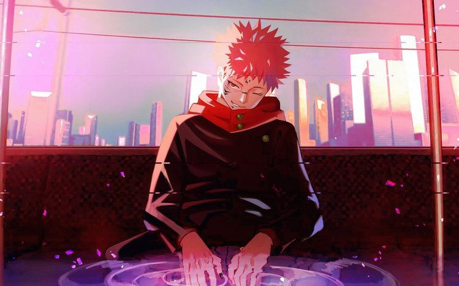

Explication de l'oeuvre
Jujutsu Kaisen est une série japonaise de manga écrite et illustrée par Gege Akutami. Publiée pour la première fois en mars 2018 dans le magazine Weekly Shōnen Jump, l'œuvre est rapidement devenue l'un des shōnen les plus populaires de ces dernières années. Voici une vue d'ensemble détaillée de cette œuvre captivante :
L'Intrigue
L'histoire se concentre sur Yuji Itadori, un lycéen athlétique qui préfère les activités parascolaires à celles sportives. Sa vie bascule lorsqu'il tombe sur un objet maudit, un doigt appartenant à un puissant esprit maléfique nommé Ryomen Sukuna. Afin de protéger ses amis, Yuji consomme le doigt et devient l'hôte de Sukuna. Cet événement marque le début de son aventure dans le monde des jujutsu, où il doit combattre des malédictions pour protéger l'humanité. Il rejoint l'école d'exorcisme de Tokyo sous la tutelle de Satoru Gojo, un des exorcistes les plus puissants.

Les Thèmes
L'œuvre aborde des thèmes variés tels que la vie et la mort, le bien et le mal, et le pouvoir des émotions humaines. Les personnages luttent constamment contre leurs propres démons intérieurs tout en affrontant des menaces extérieures. Le concept de la malédiction est central, illustrant les conséquences des actions humaines négatives accumulées.
L'univers
Le monde de Jujutsu Kaisen est riche et complexe, peuplé d'exorcistes et de malédictions. Les exorcistes utilisent l'énergie maudite pour combattre les esprits malveillants, avec des techniques et des pouvoirs variés selon leur spécialité. L'école d'exorcisme de Tokyo est le principal lieu de formation, où les étudiants apprennent à maîtriser leurs pouvoirs et à comprendre la nature des malédictions.
Adaptation Anime
En 2020, la série a été adaptée en anime par le studio MAPPA, apportant une nouvelle dimension visuelle et dynamique à l'histoire. L'animation de haute qualité et la bande-son immersive ont contribué à son succès mondial.
Les critiques
Jujutsu Kaisen a été largement acclamé pour son intrigue captivante, ses personnages bien développés et son approche unique du genre fantastique. Il a remporté plusieurs prix et s'est imposé comme une référence moderne dans le manga shōnen. Cette œuvre combine action intense, drame émotionnel et une dose d'horreur, captivant les lecteurs avec chaque nouveau chapitre. Quel aspect de Jujutsu Kaisen te fascine le plus ?
Retour à l'accueil